Portfolio optimization and automated trading with Python
Miguel Sánchez de León Peque
2019-11-08
Introduction
Hi! üëã
- Miguel Sánchez de León Peque
- OpenSistemas
- Data scientist
- Programming, data, machine learning
- Python ❤️
Abstract üìñ
- Markets/trading
- Data storing
- Portfolio optimization
- Walk-forward simulation
- Deep learning
- Real-time trading platform
Markets üìä
Types
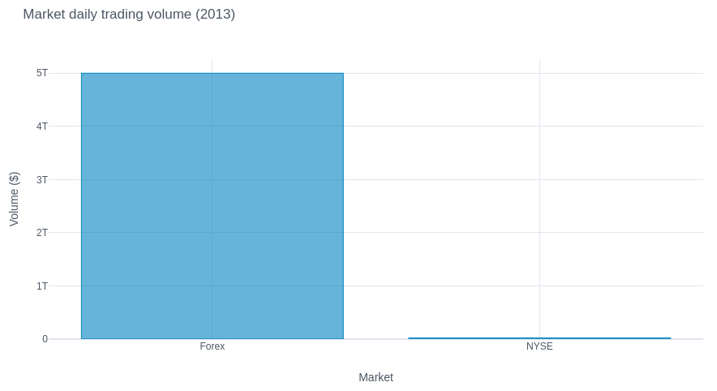
Market data

Trading ❤️
Candles

- Volume
- Bid vs. ask
- Traded vs. non-traded
Indicators üëÄ

Beasts üêâ
- Spreads
- Dynamics
- Noise
Hopes üôè
- Randomness
- Inertia
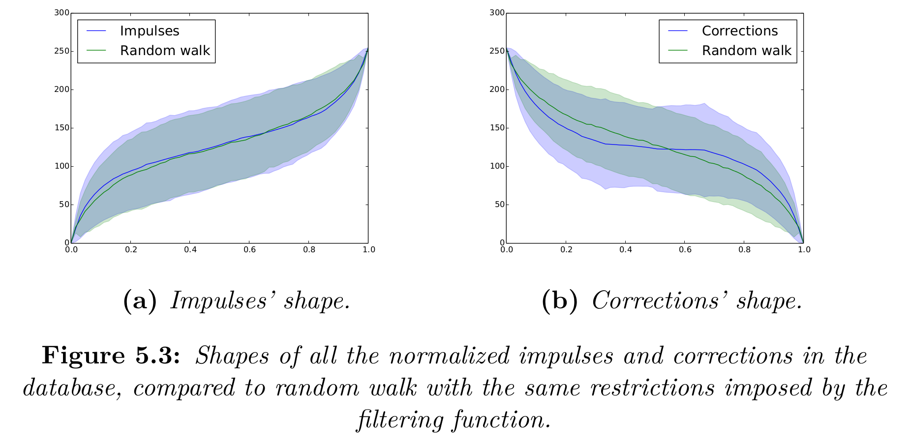
Data store üìÅ
Hierarchical Data Format
- HDF5
- Per-source
- Per-symbol
- Per-period
In-memory data
- Pandas
Portfolio optimization üìà
Why?
- Increase diversification
- Reduce correlation
Architecture
- Generator
- Generates random configurations in the parameters subspace
- Backtester
- Simulates the configuration and filters
- Portfolio
- Includes the configuration if the portfolio performance improves
Basic architecture

Flexible

Genetic algorithms
- Explore further on good results
- High correlation makes the environment rules change
- More hyperparameters/complexity
Settings
- Parameters
- Symbol
- Period (?)
Exploration

Note variables’ importance!
9 grid
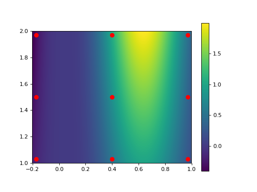
9 random

6 random

64 grid

32 random

Monte Carlo üëç
Smoothing üëé

Filtering
- Daily activity
- Sharpe
- Sortino
S_a = \frac{E[R_a - R_b]}{\sigma_a}
Evaluation (optimization)
- Performance
- Pearson correlation
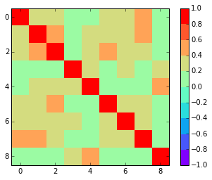
Advantages
- Faster convergence
- Traceable overfit
- Flexible depth
- Can be interrupted
Walk-forward simulation
Goals üéØ
- Avoid overfit
- Adapt
Simulation
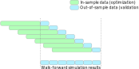
Returns

Single strategy, couple of symbols, max. 30 strategies
Dynamics
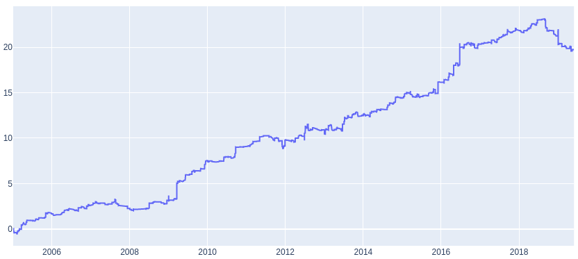
By symbol

Trades per symbol
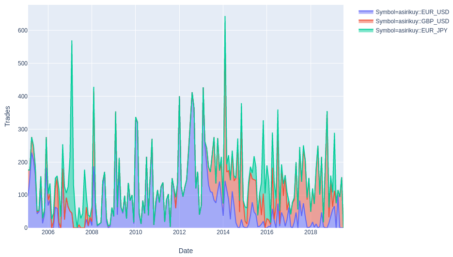
Symbol distribution

Adaptation
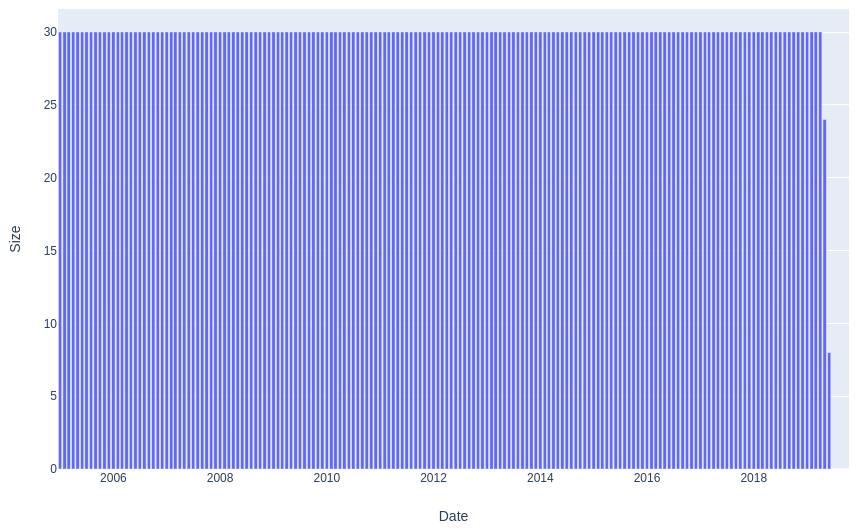
Hyperparameters
- Window size
- Step size
- Portfolio size
- Max. correlation
- Daily activity
- Ratio filter
- …
Filter
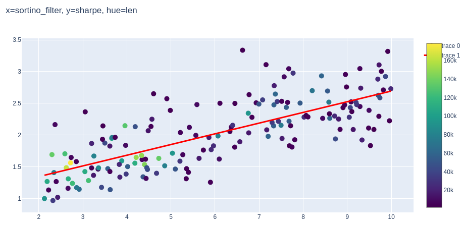
Activity
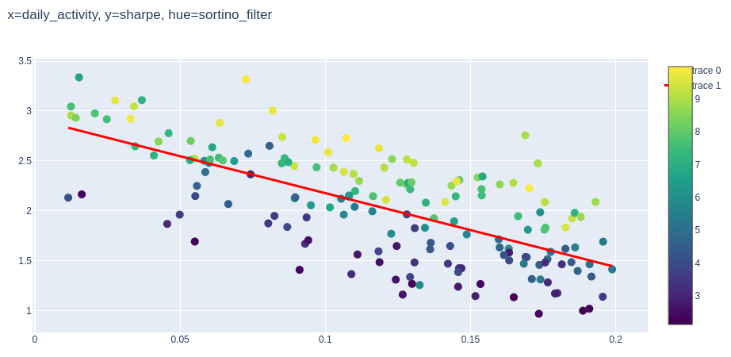
Not always…
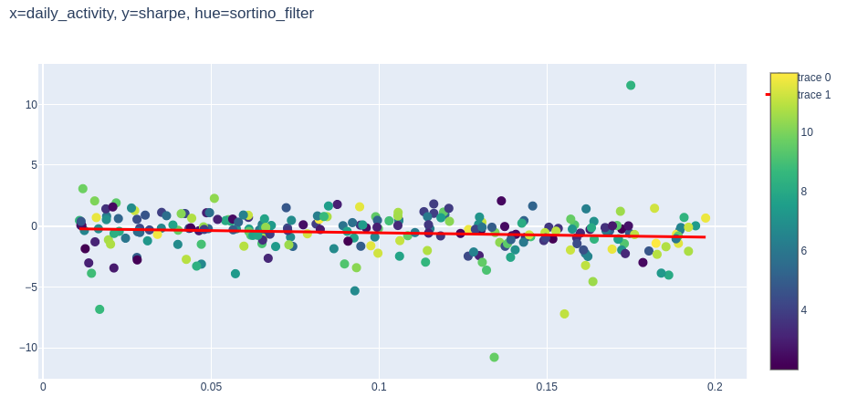
Deep learning
Machine learning

Tools üîß

Snapshots üì∑
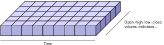
DNN

Layers
- Vary
- Convolution
- Maxpooling
- LSTM
- Dropout, regularization
- Batch normalization
Time encoding üïí
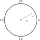
Training

Overfit
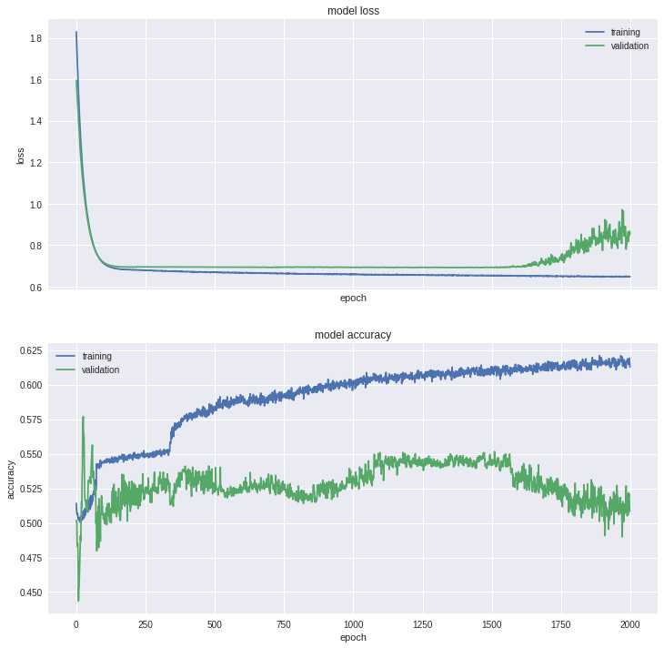
Noisy

Good
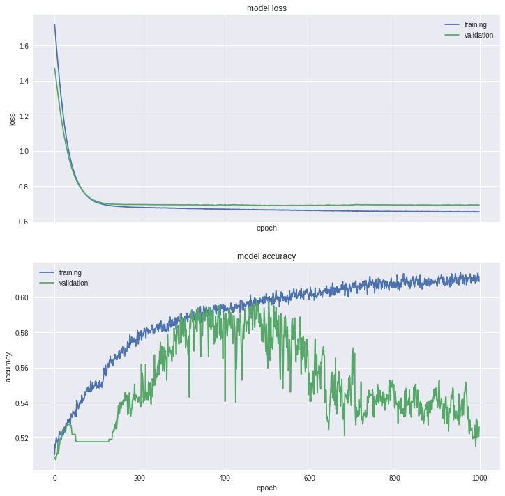
Stable

Lucky
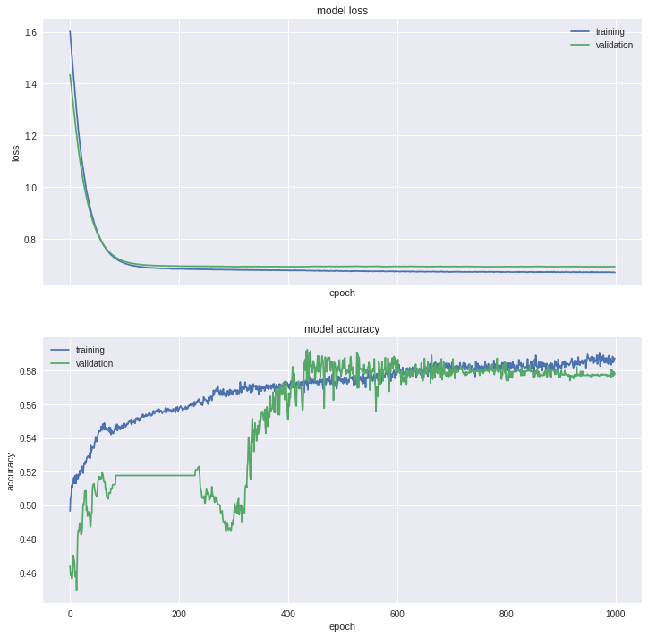
Very lucky

Typical

Important
- Regularization/dropout
- DNN size
- Batch size
Results

More data - training
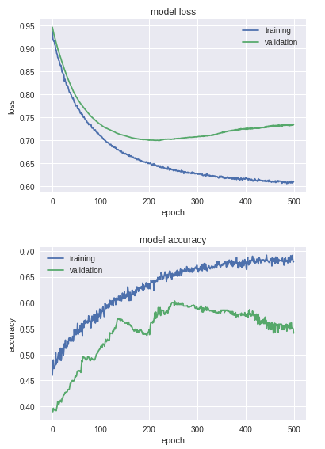
More data - results
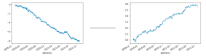
More data - vs. sampled

Real-time
Search engine results
- TradeStation
- Metatrader
- NinjaTrader
- Many others…
Cons
- Proprietary
- Heavily desktop oriented
- Linux support?
- Can I use Python to create my strategies?

What we wanted
- Control
- Optional GUI
- Multiplatform
- Python
Is this possible?

osMarkets
Basics
- Broker-independent platform
- Implemented over osBrain
- Designed for real-time automated trading
Overview
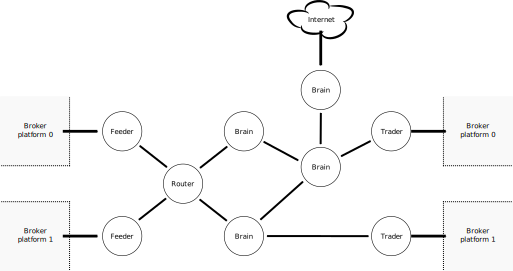
Feeder
- Get market data
- Multithread
Overview
Router
- Broker independent provider
- Stores/distributes
- Update/resample
Market data
- Tick
- Bar
- Bar Series
Bar series

Overview
Brain
- Subscriptions
- Run algorithms
- Send orders
- Great ecosystem
- Can do anything
Abstraction
Overview
Trader
- Handle orders
- Multithread
Example

Other agents
- Logger
- Informer
- Overmind
GUI
Features
- Real-time market data visualization
- Real-time indicators visualization
- Integration with osMarkets
Qt
- Great portability
- Probably the most widely used
- LGPL
PyQtGraph
- Pure Python graphics library
- Fast real-time display
- User interaction
- MIT
Overview
Note

osBrain
Basics
A general purpose multi-agent system
- Independent agents
- Message passing
- Easy configuration and deployment
Concurrency
- Locks
- Semaphores
- Critical sections
Code fails. Misterious bugs…
Irreversible disorders…

Relativity
e = mc^2
- e \equiv energy (effort)
- m \equiv mass (lines of code)
- c \equiv
speed of lightconcurrency
Multi-agent systems
- Autonomy of the agents
- Local views
- Decentralization
Processes vs. threads
Have you met GIL?
ØMQ
ØMQ is very cool - If you don’t have a project that needs it… ¡create one!
Why?
- Higher level than raw sockets
- Asynchronous communication
- Multiconnetion (not necessarily one-to-one).
- Multipattern (REQ-REP, PUB-SUB…).
- Multitransport (inproc, ipc, tcp, pgm, epgm).
- Multilanguage (C, C++, Python, Scala, Haskell, Go…).
- Multiplatform.
- Scalable (threads, processes, machines)
- LGPL.

A basic agent
- Is a system process
- Implements methods for easy binding and connecting with different patterns
- Activates on incoming message
- Mulithreading may be used (inproc socket)
Configuration
Agents are independent, but they must know the addresses of other agents
- There may be many sockets!
- For most agents, assigning a random address is simpler
If only we could…
- Have a name server
- Have an Overmind…
Pyro4
- PYthon Remote Objects
- Treat remote objects as local
- Already has a name server implementation
A real agent
- Is a system process
- This process runs a Pyro multiplexed server
- The server serves an actual Agent object
- Main thread runs the main loop (one-way)
FOSS! üéâ

Conclusion
- General-purpose multi-agent system with Python
- Independent agents (processes)
- Message passing using ØMQ
- Easy deployment and remote configuration using Pyro4
Code examples
An example (I)
import time
from osbrain import run_nameserver
from osbrain import run_agent
def log_message(agent, message):
agent.log_info('received: %s' % message)
if __name__ == '__main__':
# System deployment
ns = run_nameserver()
sender = run_agent('Alice')
receiver = run_agent('Bob')
# System configuration
addr = sender.bind('PUSH', alias='main')
receiver.connect(addr, handler=log_message)
# Send messages
while True:
time.sleep(1)
sender.send('main', 'Hello, world!')An example (II)
from osmarkets.brain import Brain
from osmarkets.architecture import OandaArchitecture
class Example(Brain):
def on_new_bar(self, series):
# Algorithm
if series[0].close > series[1].close:
side = 'buy'
else:
side = 'sell'
# Order
self.send_order(side=side,
size=100,
symbol=series.bsid.symbol)
if __name__ == '__main__':
system = OandaArchitecture(logging=True,
account_id=123456,
access_token='123abc-345def',
environment='live')
system.stream(['EUR_USD'])
system.add_brain('example', base=Example)
system['example'].set_attr(DEBUG=True)
system['example'].subscribe(('EUR_USD', 1, 'Minutes'), 100)